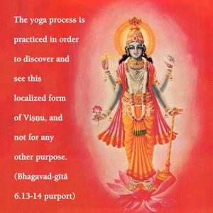

One should hold one’s body, neck and head erect in a straight line and stare steadily at the tip of the nose. Thus, with an unagitated, subdued mind, devoid of fear, completely free from sex life, one should meditate upon Me within the heart and make Me the ultimate goal of life.

The goal of life is to know Kṛṣṇa, who is situated within the heart of every living being as Paramātmā, the four-handed Viṣṇu form. The yoga process is practiced in order to discover and see this localized form of Viṣṇu, and not for any other purpose. The localized viṣṇu-mūrti is the plenary representation of Kṛṣṇa dwelling within one’s heart. One who has no program to realize this viṣṇu-mūrti is uselessly engaged in mock yoga practice and is certainly wasting his time. Kṛṣṇa is the ultimate goal of life, and the viṣṇu-mūrti situated in one’s heart is the object of yoga practice. To realize this viṣṇu-mūrti within the heart, one has to observe complete abstinence from sex life; therefore one has to leave home and live alone in a secluded place, remaining seated as mentioned above. One cannot enjoy sex life daily at home or elsewhere and attend a so-called yoga class and thus become a yogī. One has to practice controlling the mind and avoiding all kinds of sense gratification, of which sex life is the chief. In the rules of celibacy written by the great sage Yājñavalkya it is said:
karmaṇā manasā vācā
sarvāvasthāsu sarvadā
sarvatra maithuna-tyāgo
brahmacaryaṁ pracakṣate
“The vow of brahmacarya is meant to help one completely abstain from sex indulgence in work, words and mind – at all times, under all circumstances and in all places.” No one can perform correct yoga practice through sex indulgence. Brahmacarya is taught, therefore, from childhood, when one has no knowledge of sex life. Children at the age of five are sent to the guru-kula, or the place of the spiritual master, and the master trains the young boys in the strict discipline of becoming brahmacārīs. Without such practice, no one can make advancement in any yoga, whether it be dhyāna, jñāna or bhakti. One who, however, follows the rules and regulations of married life, having a sexual relationship only with his wife (and that also under regulation), is also called a brahmacārī. Such a restrained householder brahmacārī may be accepted in the bhakti school, but the jñāna and dhyāna schools do not even admit householder brahmacārīs. They require complete abstinence without compromise. In the bhakti school, a householder brahmacārī is allowed controlled sex life because the cult of bhakti-yoga is so powerful that one automatically loses sexual attraction, being engaged in the superior service of the Lord. In the Bhagavad-gītā (2.59) it is said:
viṣayā vinivartante
nirāhārasya dehinaḥ
rasa-varjaṁ raso ’py asya
paraṁ dṛṣṭvā nivartate
Whereas others are forced to restrain themselves from sense gratification, a devotee of the Lord automatically refrains because of superior taste. Other than the devotee, no one has any information of that superior taste.
Vigata-bhīḥ. One cannot be fearless unless one is fully in Kṛṣṇa consciousness. A conditioned soul is fearful due to his perverted memory, his forgetfulness of his eternal relationship with Kṛṣṇa. The Bhāgavatam (11.2.37) says, bhayaṁ dvitīyābhiniveśataḥ syād īśād apetasya viparyayo ’smṛtiḥ. Kṛṣṇa consciousness is the only basis for fearlessness. Therefore, perfect practice is possible for a person who is Kṛṣṇa conscious. And since the ultimate goal of yoga practice is to see the Lord within, a Kṛṣṇa conscious person is already the best of all yogīs. The principles of the yoga system mentioned herein are different from those of the popular so-called yoga societies.